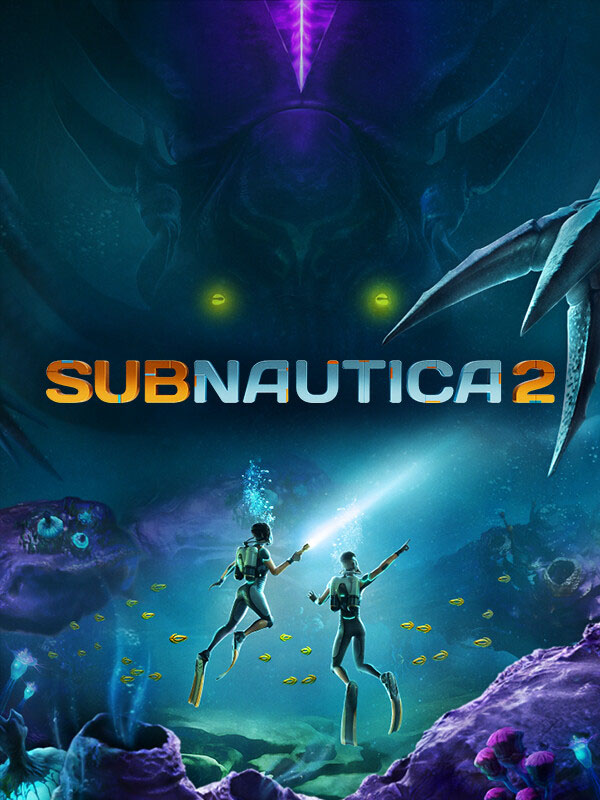

Subnautica 2
Subnautica 2
Details
 |
|
| Playtime | 2m 0s |
| Last Activity | 2026-05-14 14:35:56 |
| Added | 2026-06-09 12:22:39 |
| Modified | 2026-06-09 12:22:59 |
| Completion Status | Played |
| Library | Steam |
| Source | Steam |
| Platform | PC (Windows) |
| Release Date | 2026-05-14 |
| Community Score | 90 |
| Critic Score | |
| User Score | |
| Genre | Adventure |
| Developer | Unknown Worlds Entertainment |
| Publisher | Unknown Worlds Entertainment |
| Feature | Co-Operative Multiplayer Single Player |
| Links | Official Website Discord YouTube Subreddit Steam Epic Twitch Bluesky Xbox Community Wiki Wikipedia |
| Tag | 3D Action Adventure Atmospheric Base Building Casual Co-op Early Access Exploration First-Person Horror Multiplayer Open World Psychological Horror Sandbox Sci-fi Singleplayer Survival Survival Horror Underwater |
Description

Subnautica 2 is an underwater survival adventure game set on an all-new alien world. It is the next chapter in the Subnautica universe, developed by Unknown Worlds.
Driven from your home by ongoing conflict, Alterra offers you the chance at a new life. But as the colony ship CICADA shepherds you and your fellow Pioneers to your new home, something goes awry. The ship’s AI insists that your mission should continue. Stranded and faced with near-insurmountable odds, you must do everything in your power to survive. The future of humanity on this world is in your hands.

PLAY ALONE OR WITH FRIENDS
Subnautica 2 is being crafted as a single-player experience that you can optionally play in online co-operative multiplayer with up to three friends. You can choose from four pre-designed characters, with more characters and customization options coming throughout Early Access. Work together to explore long-forgotten ruins and learn to adapt to a planet that might not want you there.

ADAPT TO SURVIVE
To survive the depths and make this planet your home, you’ll need to utilize all the tools at your disposal. Traverse vibrant and breathtaking biomes with your Tadpole submersible. Design and customize bases to return to when your adventures push you beyond the safety of shallow waters. As Early Access develops, so too will your array of tools, equipment, and vehicles. Upgrades will help push you beyond your boundaries and unlock the secrets of this strange world.

EXPLORE THE UNKNOWN
Scan and study a rich world of biodiversity to understand life here. Discover everything from the smallest creatures to towering Leviathans. Experience the wonder, and sometimes danger, lurking around every corner. Every dive is an opportunity to uncover why the ship's AI is so determined to continue the mission and what mysteries lie beneath the surface of this breathtaking new frontier.

DESIGNED FOR EARLY ACCESS
Subnautica 2 is an Early Access title in active development. Throughout this journey, we will continuously expand the world with additional biomes, creatures, and craftables, while expanding the narrative. You may encounter bugs, in-development features, and performance issues. Your feedback is the cornerstone of our development process. Join us and help shape the next chapter of the Subnautica universe.

CRAFTED BY UNKNOWN WORLDS
Subnautica 2 is being developed by Unknown Worlds, the studio behind the award-winning Subnautica and Subnautica: Below Zero. Our journey began with the 2003 Half-Life mod Natural Selection, and today we have evolved into a fully remote, globally distributed team spanning from the United States to the United Kingdom, France, Australia, and beyond. Defined by a philosophy of open development and over a decade of community-focused innovation, we invite you to dive back into the depths with a studio dedicated to pushing the boundaries of the survival genre.